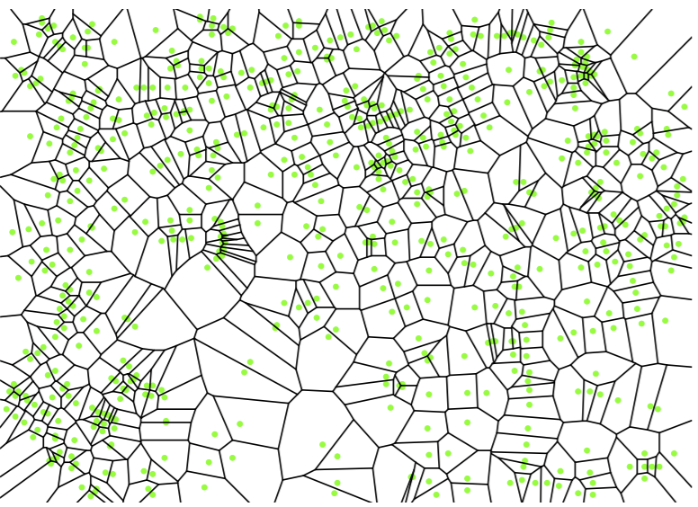

Nearest-Neighbor Algorithms
Contents
Nearest-Neighbor Algorithms¶
Exhaustive k-NN¶
The simplest nearest-neighbor algorithm is exhaustive search. Given some query point \(q\), we search through our training points and find the closest point to \(q\). We can actually just compute squared distances (not square root) to \(q\). For \(k=1\), we pick the nearest point’s class.
What about \(k > 1\)? When \(k\) is large enough, we want to essentially find the \(k\) closest points. We can maintain such distances with a binary max-heap to store the \(k\) shortest distances (seen so far) to \(q\). Whenever you encounter a sample point closer to q than max-heap root, you remove the heap-top point and insert the better point.
There is zero training time for a k-NN classifier. Everything is dependent on our training sample points and the query time. The query time takes \(O(nd + n \log k)\): \(O(nd)\) time to scan through design matrix \(X\), and \(n\) heap operations (insert/remove) which each cost \(\log k\) time (since we keep \(k\) items in the heap at all times).
Can we preprocess \(X\) in a way that gives us query time better than \(O(n)\)? We can!
In low-dimensional space (2-5 dimensions), we can construct Voronoi diagrams: … We can then construct a data structure that can search quickly through Voronoi diagram cells.
In medium-dimensional space (up to about 30 dimensions), we can use k-d trees.
For large dimensions, it’s just best to use exhaustive nearest neighbors and not get cute. Note we can still utilize preprocessing, like random projection or PCA.
Let’s go into the first two in detail. We’ll start with Voronoi diagrams.
Voronoi Diagrams¶
Think of \(X\) as a set of our training points. Any point \(w \in X\) has a Voronoi cell: the Voronoi cell of point \(w\) is the set of all points in \(\mathbb{R}^d\) that are closer to \(w\) as any other point \(p \in X\). We denote this as
A Voronoi cell will always be a convex polytope. The set of all Voronoi cells for each point in \(X\) makes our Voronoi diagram. Let’s look at an example.
{kind=link}
Note each green dot represents a training point, and each is surrounded by a Voronoi cell. Every point in each Voronoi cell is closer to its single enclosed green dot than any other training point. So now for a given query point \(q\), all we have to do is find which Voronoi cell it’s in, find the corresponding enclosed green dot, and we have our nearest neighbor. How can we do this task of point location efficiently?
Naively, we can just look at all \(n\) cells- obviously this is \(O(n)\) runtime. But we can do better with a data structure. In \(d=2\) dimensions, researchers have found data structures constructable in \(O(n \log n)\) time which can do point location in \(O(\log n)\) query time- much better than the standard \(O(n)\) time. Note that computing the Voronoi diagram itself takes \(O(n \log n)\) time. The trapezoidal map is the most popular point location data structure.
In \(d\) dimensions, the data structure to use is a binary search partition tree (BSP trees). They generalize well to high dimensional spaces. Unfortunately, it is more difficult to give a running time for these trees.
Note the biggest problem with Voronoi diagrams: they really only conceptually work for \(k=1\)-NN! Order-k Voronoi diagrams exist for this, but nobody uses this in practice because they are incredibly space-inefficient.
k-d Trees¶
k-d trees essentially mean “k-dimensional trees”: trees that subdivide a d-dimensional feature space (the k is kind of meaningless). They are very similar to decision trees: they still implement axis-aligned cuts of the feature space (cuts by feature). The main differences of k-d trees vs. decision trees:
Instead of classification/regression, we use k-d trees to find the \(k\) nearest neighbors of a query point.
The split feature is now based on factors such as feature width, rather than labels/classes (which no longer matter in k-NN). In particular, we want to split on features with longer widths. Alternatively, we can just rotate through features: split on feature 1 at depth 1, feature 2 at depth 2, etc. This makes the tree building runtime faster by a factor of \(O(d)\).
The split value is the median point for feature \(i\) OR the midpoint between 2 medians. Choosing the median point helps ensure the tree cannot get too deep: every split halves the number of points, so tree depth cannot exceed \(\log_2 n\).
Each internal node stores a sample point. Each node represents a box in feature space, and the sample point lies inside.
Let’s look at an example of a k-d tree. We will use the “rotating through features” trick: split on x-coordinate median, then y-coordinate, then (recursively) x-coordinate, etc.
Note that every node, internal and leaf, corresponds to a feature-aligned box in feature space. The root represents \(\mathbb{R}^d\), the right child at depth 1 represents the right half-plane, and so on and so forth. It is important to think of nodes and boxes as the same thing.
How do we do NN queries using this tree? For \(k=1\)-NN, given a query point \(q\), we want to find a sample point \(w\) such that \(||q-w|| \le (1+\epsilon)||q-s||\) where \(s\) is the closest sample point. If we set \(\epsilon = 0\), we have an exact NN query. But if we set \(\epsilon > 0\), then we have an approximate NN-query. Approximate NN-queries can help speed up queries in high dimensions, trading off for a small amount of imperfection.
So for a query, we don’t want to search through the entire tree if we don’t need to. Our query algorithm maintains two things throughout:
Nearest neighbor found so far, or \(k\) nearest neighbors
Binary min-heap that holds all unexplored subtrees in the k-d tree. All unexplored boxes are keyed by the distance from the query point.
As we search through the tree, the distance to the nearest neighbor can only go down. As we are exploring